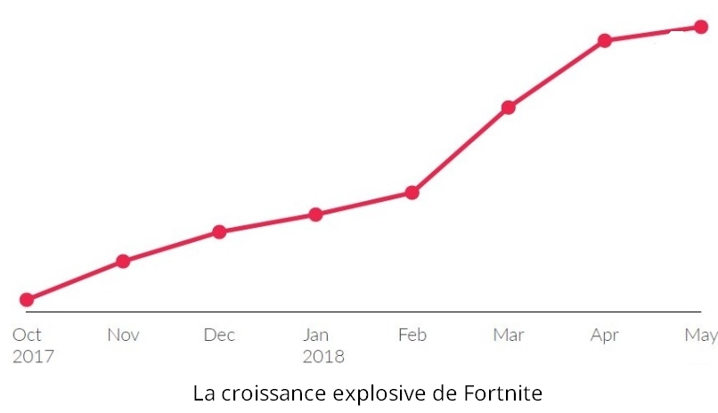
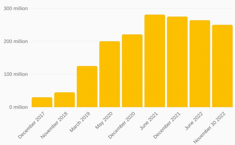
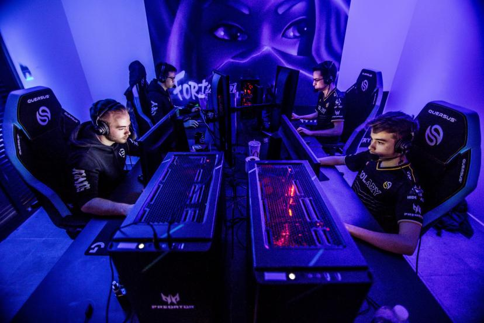
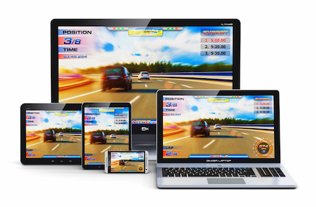
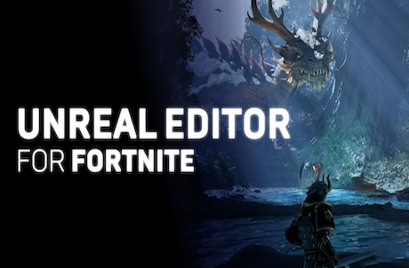
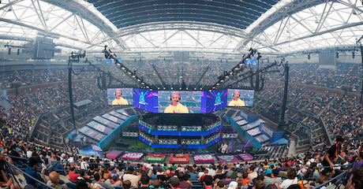
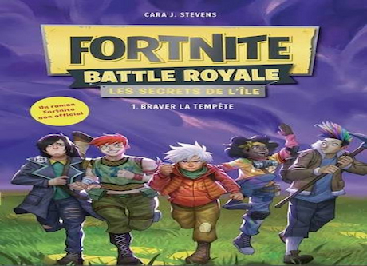
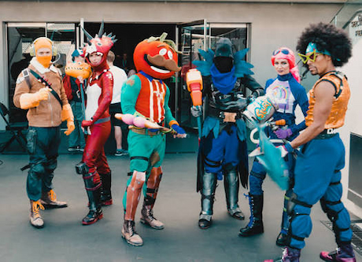

Les effets
Bien plus qu'un jeu : Un Hub Social Fortnite a transcendé le statut de simple jeu vidéo pour devenir un véritable phénomène de société. Il est devenu un "tiers-lieu" numérique, un espace où les amis se retrouvent après les cours ou le travail, non seulement pour jouer, mais pour discuter et passer du temps ensemble. Le jeu a également popularisé les fameuses "danses Fortnite" (émotes), reprises dans les cours de récréation, par des célébrités et même par des sportifs professionnels lors de leurs célébrations de victoire.
💰 Les effets économiques de Fortnite
Fortnite a un impact économique important dans l'industrie du jeu vidéo. Grâce à son modèle gratuit financé par l'achat de contenus virtuels (skins, passes de combat, accessoires), il génère plusieurs milliards de dollars de revenus chaque année pour Epic Games. Le jeu crée également des emplois dans le développement, l'esport et la création de contenus. Enfin, son succès influence les stratégies commerciales de nombreuses entreprises du secteur numérique.


🎮 Effets sociaux
Fortnite favorise les interactions entre joueurs grâce au mode multijoueur et au chat vocal. Il permet à des amis de se retrouver en ligne, mais peut aussi entraîner une diminution du temps consacré aux activités en présentiel.
🧠 Effets psychologiques
Le jeu développe certaines compétences comme la réactivité, la prise de décision rapide et la coopération. Cependant, une pratique excessive peut parfois entraîner une dépendance ou des difficultés de concentration.

📱 Effets technologiques
Le succès de Fortnite a contribué à populariser les jeux en ligne multiplateformes (PC, console, mobile) et a encouragé des innovations dans les moteurs graphiques, notamment avec Unreal Engine.


📺 Effets médiatiques
Le jeu a favorisé l'essor des créateurs de contenu sur des plateformes comme YouTube et Twitch, créant de nouvelles sources de revenus pour les streamers et vidéastes.

🏆 Effets culturels
Fortnite est devenu un phénomène culturel mondial. Ses collaborations avec des artistes, des sportifs et des films ont influencé la musique, la mode et les réseaux sociaux.

